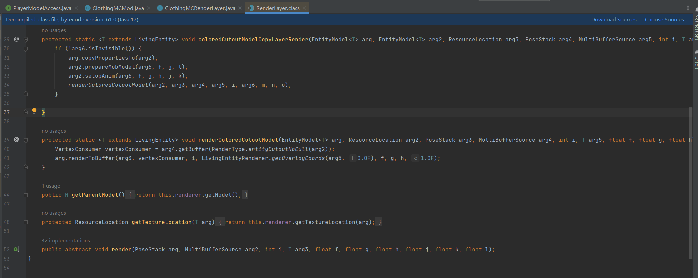

CS184 Final Project - ClothingMC
Team: Yunhao Cao(@realquantumcookie), Martin(Yuqi) Zhai (@yuq1-zhai), Jacky Kwok(@jackykwok2024), Athena Leong (@athenaleong).
Abstract
This final project is an extension of Project 4 “Clothism” and Lecture 19 “Physical Simulation” where we wrote a physical-simulation based cape mod for Minecraft. In this mod, we rewrote the rendering pipeline for the capes starting from building the meshed to creating the uv mapping and finally to translating and rotating the so-called “pose” for each mesh to the desired location via coordinates generated from physical simulations.
Technical Approach
First of all, we created a 2D mesh for the cape, from one entire cape in the default minecraft environment into small cube meshes, where each uv mapping is offsetted from the left of the cape. We chose primarily because the front side of the cape is 10*16 pixels in size, and we would like each mesh to control exactly one pixel of interest. (Referenced from LittleSkin.cn for the exact size of the capes available there, figure 1)
In our final video above, you can see that the cape is divded into more than pieces for smoother simulation.
| Cape Pattern | Visualization |
|---|---|
 |
 |
Then there are 2 different simulation approaches in determining the global coordinates of the meshes at each time step: the first one is pure interpolation and the second one is pure physical simulation.
In the first simulation approach (the main result before milestone), we wrote the cape simulation based on vanilla vertex manipulation. The milestone result has no physics simulation code within and is only a demo of what minecraft simulation can do. A lot of variables we received from minecraft are one variable timed between two time intervals so we have to find a delta to be able to interpolate it linearly. To demonstrate a simple motion of the cape, we read in the magnitudes of the speed of the player which is moving in global coordinates. Then, we used linear interpolation to get the immediate body rotation or the directional vector that the character is facing, which we used to define the global to local coordinates transformation matrix (a pure 3D rotational matrix from Lecture 4 “Transforms” without homogeneous coordinates, figure 2). To read the cloak’s relative position with respect to the player’s body we need to do a second linear interpolation. Then we use that to transform the x, y, z coordinates of the current mesh in the cape relative to the player’s current position into player’s local coordinates with default x, y, z axis direction in minecraft. We rotate the player’s coordinate again to get the local coordinate of the cape mesh and modify the pose of the cape according to the information above (referred to minecraft WaveyCapes Mod for some hints and some definitions of the Minecraft API’s). In the version we have for the milestone report, the cape is only modified to “rotate up” when the player is going forward.
Here's a video of what the cape looks like in our milestone report
For the second simulation approach, which is also the main focus in this project, we utilized a physical simulation approach to determine the offset and rotation needed for each mesh. The first step is applying the translation and rotation of the player computed from a similar way in the interpolation approach (through linear interpolation of the x, y, z, and distance traveled of the player) the first row of the cape, where we fixed to be pinned (so the cape is connected to the player through the first row). Then we call the simulate function in the simulation class, where we will perform the simulation similar to Project 4. We started with building the point-mass and spring system (implemented in the similar way as we did in Project 4, where we have a total of 10*16 point masses and built mainly the structural and bending constraints within those point masses). A thing to notice is that for convenience and consistency of coding, we put the point that is higher up in the cape or to the left side of the cape as the first point of the spring, i.e. pointA, and the other one which is lower or to the right to be pointB. Then we wrote the entire physical simulation just as we did in Clothism. We first computed the force enacting on the point mass through Hooke’s law for spring forces and gravitational forces (applyMotions and applyGravity). Then we also tried to handle collisions in the cape itself and against the player. However, we did not do it in the way that is similar to Project 4, where we added in a collide function for the objects that we would likely collide with, since this will take a lot of time to process and the efficiency of our code did not allow us to do so. Therefore, we only worked with preventing collision with the player through limiting the z coordinate of the cape not to less than the player’s z coordinate, which is not working exactly as we wanted (the cape seems to shrink a bit when it encounters the player, but nevertheless, the cape did not pass through the player). Lastly, we constrained the length of each spring to be no more than 10% more than the rest-length of the spring, which we always pushed upward the lower point since we are iterating from top to bottom. This concludes the physical simulation. Following from that, we used the relative motion of the end coordinate for point-mass against the point fixed on the shoulder as the translation to that exact mesh. The rotation is determined from interpolation of the current mesh and the mesh directly above it. After applying those 2 changes to the pose, the renderer will render the mesh at the desired position with the help from physical simulations.
Here's our final result of the cape mod
Problems Encountered
- The coordinate system of Minecraft is extremely complicated and documentation for it is really, really bad.
- Player yaw rotation in world axis does not follow right hand rule
- We had to translate between 3 different coordinate frames, the world, player, and our mesh.
- We were able to find some references but we would later find out that those references actually give us wrong information, which causes hours of debugging efforts to be wasted. We had to use some hacks (see image below) to be able to debug the coordinate system.

- Debugging coordinates using meshes
- We tackled this problem by trial and error by guessing and changing one coordinate at a time
- Spring system we encountered severe problems.
- We first wrote the exact same code to constrain the spring lengths to be no more than 110% of the rest-length of the spring, and we updated the position of the spring in a order that is from left to right and top to bottom, which will drag down the points on the last row and move up the points in this row and result in a huge gap in between each rows. The way we tackled this problem is mainly to always move the bottom point upwards to enforce the 10% difference instead of moving top point down and bottom point up.
- The sequence that we added in for the 2 points for each spring is reversed for some springs, which resulted in a weird elongated spring in some places and shrunk spring in other places. We tackled this problem by carefully making the order of points the same for all constraints.
- Once we add in shearing constraints, the cape, for some reason, will appear to be slanted (like a trapezoid instead of a rectangle). Sadly, we did not find a way to tackle this problem at this stage, so we commented out the shearing constraints.
- Modding in Minecraft is harder than we think!
- A major contributor to this issue is the fact that Microsoft forces all modding development kits to use their official “Minecraft Java Bindings” by default, but the problem related to this binding is that it is obfuscated with member function arguments which makes a lot of function calls extremely hard to read and implement
- 
- We tackled this problem by reading many different examples of mod codes on the internet, trying to reverse-engineer the meaning of different functions.
Lessons Learned
- A good documentation really helps. Due to the bad documentation of the Forge API as well as the Minecraft classes and functions, it is hard for us to get our hands on changing codes in the direction that we wanted. This bad experience helps us learn the importance of good documentation, which we should also document the meaning of each functional call in comments that will help us to go back and understand the codes easily.
- Developing a good architecture is extremely important. We somehow rushed into doing the project without really looking into developing a good architecture to fill in. A lot of classes and interfaces were developed a lot later into the project when we released we are missing something that is used extensively in different function calls. Next time, it would be the best and completely not a waste of time to develop the overall architecture of our code first.
- Need to research first and draw the schedules after. According to our proposed schedule in the beginning of the project, we should be able to finish most of the things we listed after week 2, which is a complete underestimation of workload. We underestimated the difficulty to get the project started by understanding the APIs, setting up the environments, as well as understanding the game logic and its classes. Next time, when we are planning the schedule, we need to research a bit before planning and have a good estimation of the workload for each step before actual planning happens.
Credits
- https://minecraft.fandom.com/wiki/Coordinates
- https://minecraftcapes.net/
- https://docs.minecraftforge.net/en/1.19.x/
- https://www.curseforge.com/minecraft/mc-mods/waveycape
- https://www.curseforge.com/minecraft/mc-mods/physics-mod
Contributions from each Team Member
Martin Zhai and Yunhao Cao focused mainly on the architecture and interpolation based method (mainly focusing on the stuff we presented on the milestone report). They together wrote the renderer for both simulation approaches and drafted up the classes, interfaces, and injectors for the project. Athena Leong and Jacky Kwok focused mainly on the physical simulation portion, where they wrote the force calculations, constraining the spring lengths, and applying motions.
All team members joined in debugging at the end stage for physical simulations, recorded the final project videos, and wrote the final deliverables.